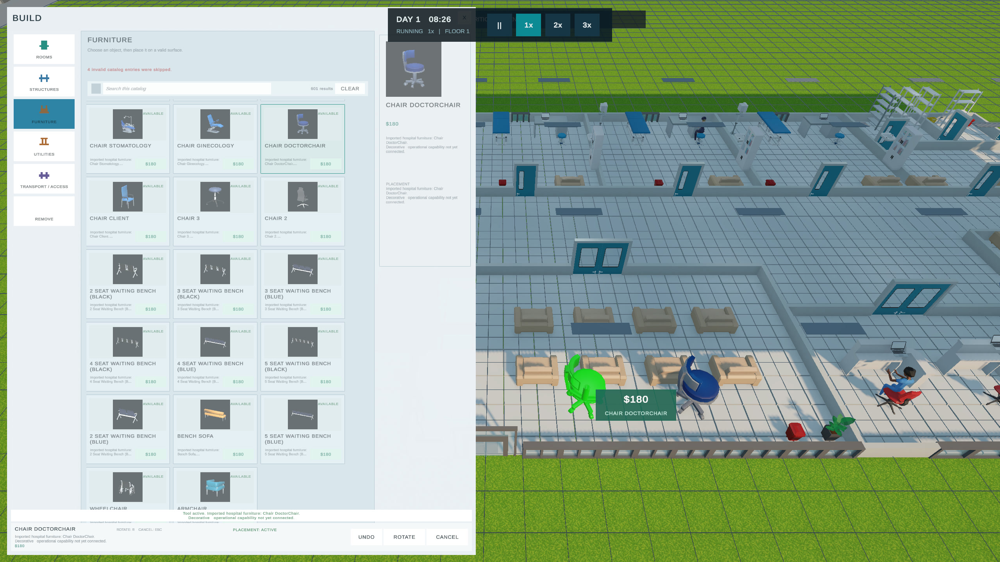
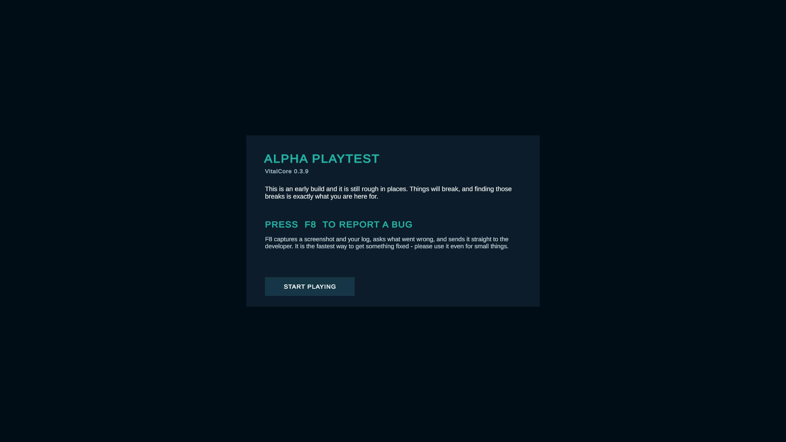
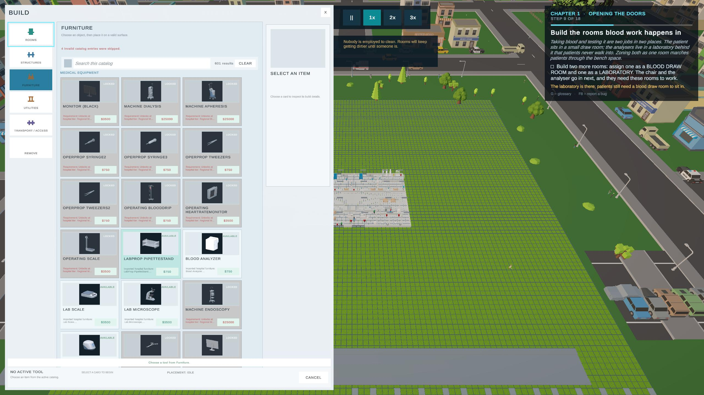
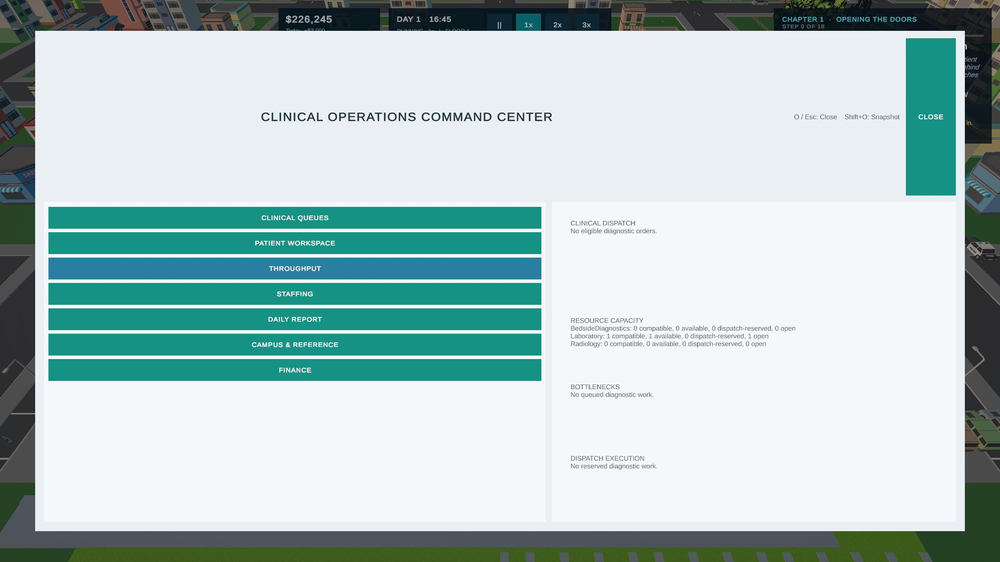
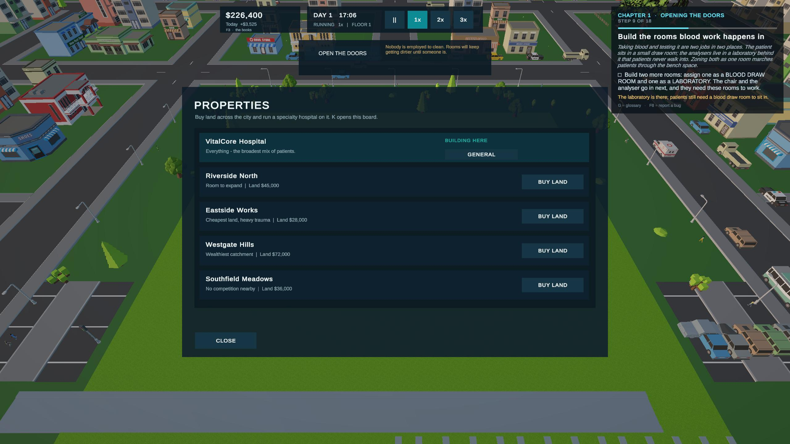
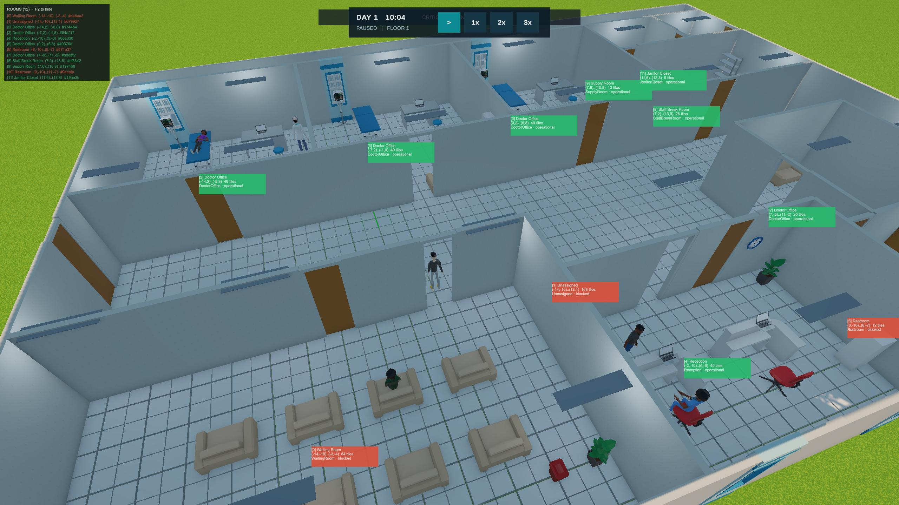
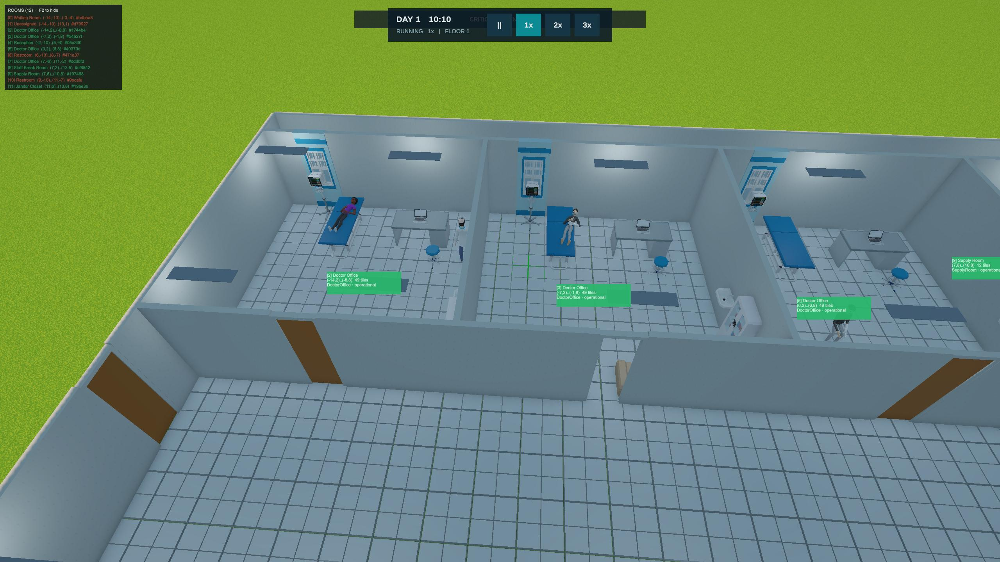
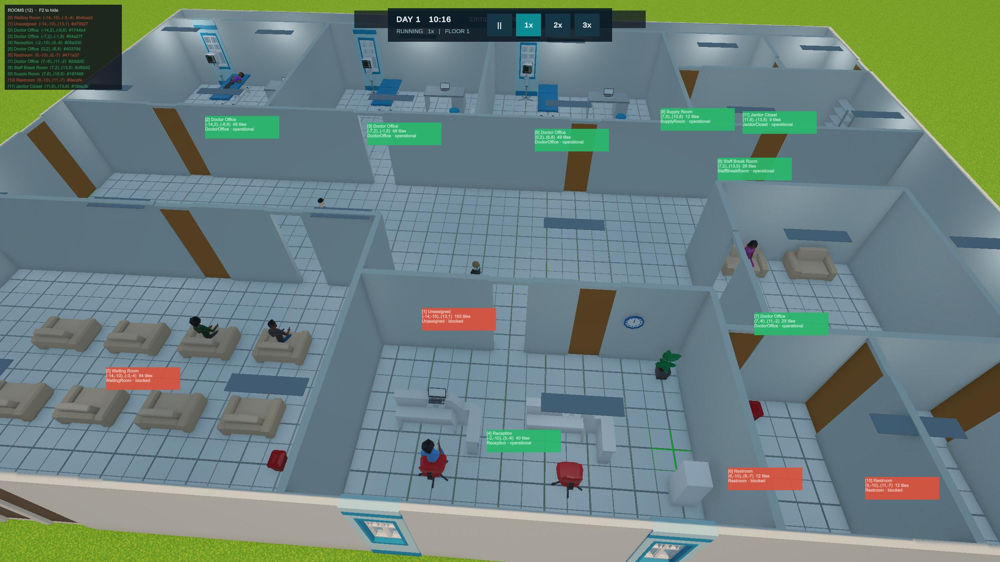

ONE-SENTENCE DESCRIPTION
VitalCore Hospital is a deep low-poly hospital-management simulation where players build, operate, and grow a modern healthcare institution.
OFFICIAL MEDIA RESOURCE
Approved information and authentic in-game media for journalists, streamers, video creators, and community organizers covering VitalCore Hospital.

QUICK FACTS
The information below may be quoted or adapted for coverage. Features, visuals, balance, and release plans remain subject to change during development.
ONE-SENTENCE DESCRIPTION
VitalCore Hospital is a deep low-poly hospital-management simulation where players build, operate, and grow a modern healthcare institution.
SHORT DESCRIPTION
Design a complete hospital campus and manage the connected pressures of construction, patient flow, staffing, surgery, critical care, specialties, finance, teaching, research, and long-term institutional growth.
CURRENT DEVELOPMENT SNAPSHOT
The August 19 alpha walkthrough shows tester onboarding and F8 bug reporting, Chapter One construction objectives, the live building catalog, the Clinical Operations Command Center, city property expansion, and Cedar Grove at full scale. The searchable construction catalog presents more than 600 items. Current work continues on alpha feedback, onboarding, persistence, performance, and reliability.
APPROVED MEDIA
These files may be used in editorial coverage and creator posts about VitalCore Hospital. Please identify them as work-in-progress gameplay and do not imply a release date.







Approved screenshots and video may be resized or cropped for coverage of VitalCore Hospital. Do not sell, redistribute as a standalone asset pack, remove work-in-progress context, or extract individual third-party game assets. Some visible in-game art incorporates properly licensed marketplace assets.
OFFICIAL LINKS
Use these links when directing readers and viewers to VitalCore Hospital.
{kind=link}
{kind=link}
{kind=link}
{kind=link}
{kind=link}
{kind=link}
{kind=link}
{kind=link}